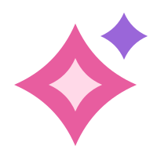

elara nova
by Evelyn Patiño
A · La Nova — la estrella que explota de brillo (doble destello)
elara nova
by Evelyn Patiño
B · Click con amor — corazón + cursor ("menos a mano" = un click)

elara nova
by Evelyn Patiño
C · La "e" nova — monograma bubble con chispas